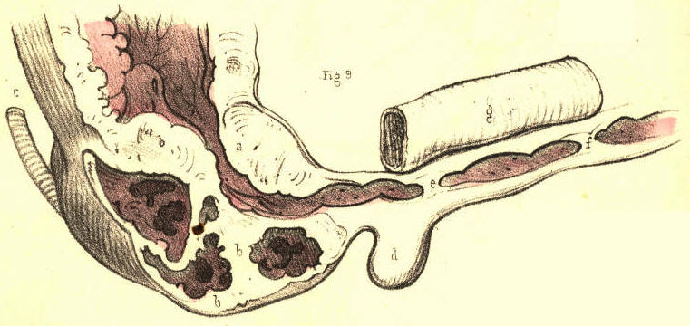
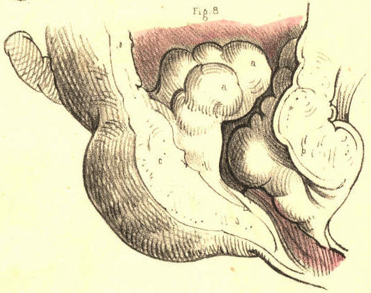

SURGICAL ANATOMY by JOSEPH MACLISE
COMMENTARY ON PLATES 59 & 60.
THE VARIOUS FORMS AND POSITIONS OF STRICTURES AND OTHER
OBSTRUCTIONS OF THE URETHRA.--FALSE PASSAGES.--ENLARGEMENTS
AND DEFORMITIES OF THE PROSTATE.
Impediments to the passage of the urine through the urethra may arise
from different causes, such as the impaction of a small calculus in the
canal, or any morbid growth (a polypus, &c.) being situated
therein, or
from an abscess which, though forming externally to the urethra, may
press upon this tube so as either to obstruct it partially, by bending
one of its sides towards the other, or completely, by surrounding the
canal on all sides. These causes of obstruction may happen in any part
of the urethra, but there are two others (the prostatic and the
spasmodic) which are, owing to anatomical circumstances, necessarily
confined to the posterior two-thirds of the urethra. The portion of the
urethra surrounded by the prostate can alone be obstructed by this body
when it has become irregularly enlarged, while the spasmodic stricture
can only happen to the membranous portion of the urethra, and to an inch
or two of the canal anterior to the bulb, these being the parts which
are embraced by muscular structures. The urethra itself not being
muscular, cannot give rise to the spasmodic form of stricture. But that
kind of obstruction which is common to all parts of the urethra, and
which is dependent, as well upon the structures of which the canal is
uniformly composed, as upon the circumstance that inflammation may
attack these in any situation and produce the same effect, is the
permanent or organic stricture. Of this disease the forms are as various
as the situations are, for as certainly as it may reasonably be supposed
that the plastic lymph, effused in an inflamed state of the urethra from
any cause, does not give rise to stricture of any special or particular
form, exclusive of all others; so as certainly may it be inferred that,
in a structurally uniform canal, inflammation points to no one
particular place of it, whereat by preference to establish the organic
stricture. The membranous part of the canal is, however, mentioned as
being the situation most prone to the disease; but I have little doubt,
nevertheless, that owing to general rules of this kind being taken for
granted, upon imposing authority, many more serious evils (false
passages, &c.) have been effected by catheterism than existed
previous
to the performance of this operation.[Footnote]
[Footnote: Home describes "a natural constriction of the urethra,
directly behind the bulb, which is probably formed with a power of
contraction to prevent," &c. This is the part which he says is "most
liable to the disease of stricture." (Strictures
of the Urethra.) Now,
if anyone, even among the acute observing microscopists, can discern the
structure to which Home alludes, he will certainly prove this anatomist
to be a marked exception amongst those who, for the enforcement of any
doctrine, can see any thing or phenomenon they wish to see. And, if
Hunter were as the mirror from which Home's mind was reflected, then the
observation must be imputed to the Great Original. Upon the question,
however, as to which is the most frequent seat of stricture, I find that
both these anatomists do not agree, Hunter stating that its usual seat
is just in front of the bulb, while Home regrets, as it were, to be
obliged to differ from "his immortal friend," and avers its seat to be
an infinitesimal degree behind the bulb. Sir A. Cooper again, though
arguing that the most usual situation of stricture is that mentioned by
Hunter, names, as next in order of frequency, strictures of the
membranous and prostatic parts of the urethra. Does it not appear
strange now, how questions of this import should have occupied so much
of the serious attention of our great predecessors, and of those, too,
who at the present time form the vanguard of the ranks of science? Upon
what circumstance, either anatomical or pathological, can one part of
the urethra be more liable to the organic stricture than another?]
Figs. 1 and 2, Plate 59.--In these figures are presented seven forms of
organic stricture occurring, in different parts of the urethra. In a,
Fig. 1, the mucous membrane is thrown into a sharp circular fold, in the
centre of which the canal, appears much contracted; a section of this
stricture appears in b, Fig.
2. In b, Fig. 1, the canal is
contracted
laterally by a prominent fold of the mucous membrane at the opposite
side. In c, Fig. 1, an organized band of lymph is stretched across the
canal; this stricture is seen in section in c, Fig. 2. In e, Fig. 1, a
stellate band of organized lymph, attached by pedicles to three sides of
the urethra, divides the canal into three passages. In d, Fig. 1, the
canal is seen to be much contracted towards the left side by a
crescentic fold of the lining membrane projecting from the right. In f,
the canal appears contracted by a circular membrane, perforated in the
centre; a section of which is seen at a,
Fig. 2. The form of the organic
stricture varies therefore according to the three following
circumstances:--1st. When lymph becomes effused within the canal upon
the surface of the lining mucous membrane, and contracts adhesions
across the canal. 2ndly. When lymph is effused external to the lining
membrane, and projects this inwards, thereby narrowing the diameter of
the canal. 3rdly. When the outer and inner walls of a part of the
urethra are involved in the effused organizable matter, and on
contracting towards each other, encroach at the same time upon the area
of the canal. This latter state presents the form, which is known as the
old callous tough stricture, extending in many instances for an inch or
more along the canal. In cases where the urethra becomes obstructed by
tough bands of substance, c e,
which cross the canal directly, the
points of flexible catheters, especially if these be of slender shape,
are apt to be bent upon the resisting part, and on pressure being
continued, the operator may be led to suppose that the instrument
traverses the stricture, while it is most probably perforating the wall
of the urethra. But in those cases where the diameter of the canal is
circularly contracted, the stricture generally presents a conical
depression in front, which, receiving the point of the instrument,
allows this to enter the central passage unerringly. A stricture formed
by a crescentic septum, such as is seen in b d, Fig. 1, offers a more
effectual obstacle to the passage of a catheter than the circular septum
like a f.
| Figure 1 |
Figure 2. |
| Plate
59. |
Fig. 3, Plate 59.--In this there are seen three separate strictures, a,
b, c, situated in the urethra,
anterior to the bulb. In some cases there
are many more strictures (even to the number of six or seven) situated
in various parts of the urethra; and it is observed that when one
stricture exists, other slight tightnesses in different parts of the
canal frequently attend it. (Hunter.) When several strictures occur in
various parts of the urethra, they may occasion as much difficulty in
passing an instrument as if the whole canal between the extreme
constrictions were uniformly narrowed.
Plate 59.--Figure 3.
Fig. 4, Plate 59.--In this the canal is constricted at the point a,
midway between the bulb and glans. A false passage has been made under
the urethra by an instrument which passed out of the canal at the point
f, anterior to the stricture a, and re-entered the canal at the
point c,
anterior to the bulb. When a false passage of this kind happens to be
made, it will become a permanent outlet for the urine, so long as the
stricture remains. For it can be of no avail that we avoid re-opening
the anterior perforation by the catheter, so long as the urine prevented
from flowing by the natural canal enters the posterior perforation.
Measures should be at once taken to remove the stricture.
Plate 59.--Figure 4.
Fig. 5, Plate 59.--The stricture a
appears midway between the bulb and
glans, the area of the passage through the stricture being sufficient
only to admit a bristle to pass. It would seem almost impossible to pass
a catheter through a stricture so close as this, unless by a laceration
of the part, combined with dilatation.
Plate 59.--Figure 5.
Fig. 6, Plate 59.--Two instruments, a,
b, have made false passages
beneath the mucous membrane, in a case where no stricture at all
existed. The resistance which the instruments encountered in passing out
of the canal having been mistaken, no doubt, for that of passing through
a close stricture.
Plate 59.--Figure 6.
Fig. 7, Plate 59.--A bougie, b b,
is seen to perforate the urethra
anterior to the stricture c,
situated an inch behind the glans, and
after traversing the substance of the right corpus cavernosum d, for its
whole length, re-enters the neck of the bladder through the body of the
prostate.
Plate 59.--Figure 7.
Fig. 8, Plate 59.--A bougie, c c,
appears tearing and passing beneath
the lining membrane, d d, of
the prostatic urethra. It is remarked that
the origin of a false passage is in general anterior to the stricture.
It may, however, occur at any part of the canal in which no stricture
exists, if the hand that impels the instrument be not guided by a true
knowledge of the form of the urethra; and perhaps the accident happening
from this cause is the more general rule of the two.
Plate 59.--Figure 8.
Fig. 9, Plate 59.--Two strictures are represented here, the one, e,
close to the bulb d, the
other, f, an inch anterior to
this part. In the
prostate, a b, are seen
irregularly shaped abscess pits, communicating
with each other, and projecting upwards the floor of this body to such a
degree, that the prostatic canal appears nearly obliterated.

Plate 59.--Figure 9.
Fig. 10, Plate 59.--Two bougies, d e,
are seen to enter the upper wall
of the urethra, c, anterior
to the prostate, a b. This
accident happens
when the handle of a rigid instrument is depressed too soon, with the
object of raising its point over the enlarged third lobe of the
prostate.
Plate 59.--Figure 10.
Fig. 11, Plate 59.--Two instruments appear transfixing the prostate, of
which body the three lobes, a, b, c,
are much enlarged. The instrument d
perforates the third lobe, a;
while the instrument e
penetrates the
right lobe, c, and the third
lobe, a. This accident occurs
when
instruments not possessing the proper prostatic bend are forcibly pushed
forwards against the resistance at the neck of the bladder.
Plate 59.--Figure 11.
Fig. 12, Plate 59.--In this case an instrument, d d, after passing
beneath part of the lining membrane, e
e, anterior to the bulb,
penetrates b, the right lobe
of the prostate. A second instrument, c
c,
penetrates the left lobe. A third smaller instrument, f f, is seen to
pass out of the urethra anterior to the prostate, and after transfixing
the right vesicula seminalis external to the neck of the bladder, enters
this viscus at a point behind the prostate. The resistance which the two
larger instruments met with in penetrating the prostate, made it seem,
perhaps, that a tight stricture existed in this situation, to match
which the smaller instrument, f f,
was afterwards passed in the course
marked out.
Plate 59.--Figure 12.
Figs. 1 to 5, Plate 60, represent a series of prostates, in which the
third lobe gradually increases in size. In Fig. 1, which shows the
healthy state of the neck of the bladder, unmarked by the prominent
lines which are said to bound the space named "trigone vesical," or by
those which indicate the position of the "muscles of the ureters," the
third lobe does not exist. In Fig. 2 it appears as the uvula vesicae, a.
In Fig. 3 the part a is
increased, and under the name now of third lobe
is seen to contract and bend upwards the prostatic canal. In Fig. 4 the
effect which the growth of the lobe, a,
produces upon the form of the
neck of the bladder becomes more marked, and the part presenting
perforations, e e, produced
by instruments, indicates that by its shape
it became an obstacle to the egress of the urine as well as to the
entrance of instruments. A calculus of irregular form is seen to lodge
behind the third lobe, and to be out of the reach of the point of a
sound, supposing this to enter the bladder over the apex of the lobe. In
Fig. 5 the three lobes are enlarged, but the third is most so, and while
standing on a narrow pedicle attached to the floor of the prostate,
completely blocks up the neck of the bladder. [Footnote]
Plate 60.--Figure 1
Plate 60.--Figure 2
Plate 60.--Figure 3
Plate 60.--Figure 4
Plate 60.--Figure 5
[Footnote: On comparing this series of figures,
it must appear that the
third lobe of the prostate is the product of diseased action, in
so far
at least as an unnatural hypertrophy of a part may be so designated. It
is not proper to the bladder in the healthy state of this organ, and
where it does manifest itself by increase it performs no healthy
function in the economy. When Home, therefore, described this part as a
new fact in anatomy, he had in reality as little reason for so doing as
he would have had in naming any other tumour, a thing unknown to normal
anatomy. Langenbeck (Neue Bibl. b. i. p. 360) denies its existence in
the healthy state. Cruveilhier (Anat. Pathog. liv. xxvii.) deems it
incorrect to reckon a third lobe as proper to the healthy bladder.]
Fig. 6, Plate 60.--The prostatic canal is bent upwards by the enlarged
third lobe to such a degree as to form a right angle with the membranous
part of the canal. A bougie is seen to perforate the third lobe, and
this is the most frequent mode in which, under such circumstances, and
with instruments of the usual imperfect form, access may be gained to
the bladder for the relief of retention of urine. "The new passage may
in every respect be as efficient as one formed by puncture or incision
in any other way." (Fergusson.)
Plate 60.--Figure 6
Fig. 7, Plate 60.--The three lobes of the prostate, a, b, c, are equally
enlarged. The prostatic canal is consequently much contracted and
distorted, so that an instrument on being passed into the bladder has
made a false passage through the third lobe. When a catheter is
suspected to have entered the bladder by perforating the prostate, the
instrument should be retained in the newly made passage till such time
as this has assumed the cylindrical form of the instrument. If this be
done, the new passage will be the more likely to become permanent. It is
ascertained that all false passages and fistulae by which the urine
escapes, become after a time lined with a membrane similar to that of
the urethra. (Stafford.)
Plate 60.--Figure 7
Fig. 8, Plate 60.--The three lobes, a,
b, c, of the prostate are
irregularly enlarged. The third lobe, a
a, projecting from below,
distorts the prostatic canal upwards and to the right side.

Plate 60.--Figure 8.
Fig. 9, Plate 60.--The right lobe, a
c c, of the prostate appears
hollowed out so as to form the sac of an abscess which, by its
projection behind, pressed upon the forepart of the rectum, and by its
projection in front, contracted the area of the prostatic canal, and
thereby caused an obstruction in this part. Not unfrequently when a
catheter is passed along the urethra, for the relief of a retention of
urine caused by the swell of an abscess in this situation, the sac
becomes penetrated by the instrument, and, instead of urine, pus flows.
The sac of a prostatic abscess frequently opens of its own accord into
the neighbouring part of the urethra, and when this occurs it becomes
necessary to retain a catheter in the neck of the bladder, so as to
prevent the urine entering the sac.
Plate 60.--Figure 9.
Fig. 10, Plate 60.--The prostate presents four lobes of equal size, and
all projecting largely around the neck of the bladder. The prostatic
canal is almost completely obstructed, and an instrument has made a
false passage through the lobe a.
Plate 60.--Figure 10.
Fig. 11, Plate 60.--The third lobe of the prostate is viewed in section,
and shows the track of the false passage made by the catheter, d,
through it, from its apex to its base. The proper canal is bent upwards
from its usual position, which is that at present marked by the
instrument in the false passage.
Plate 60.--Figure 11.
Fig. 12, Plate 60.--The prostatic lobes are uniformly enlarged, and
cause the corresponding part of the urethra to be uniformly contracted,
so as closely to embrace the catheter, d d, occupying it, and to offer
considerable resistance to the passage of the instrument.
Plate 60.--Figure 12.
Fig. 13, Plate 60.--The prostate, bc,
is considerably enlarged
anteriorly, b, in consequence
of which the prostatic canal appears more
horizontal even than natural. The catheter, d, occupying the canal lies
nearly straight. The lower wall, c,
of the prostate is much diminished
in thickness. A nipple-shaped process, a, is seen to be attached by a
pedicle to the back of the upper part, b, of the prostate, and to act
like a stopper to the neck of the bladder. The body a being moveable, it
will be perceived how, while the bladder is distended with urine, the
pressure from above may block up the neck of the organ with this part,
and thus cause complete retention, which, on the introduction of a
catheter, becomes readily relieved by the instrument pushing the
obstructing body aside.
Plate 60.--Figure 13.
COMMENTARY ON PLATES 61
& 62
{kind=link}
{kind=link}